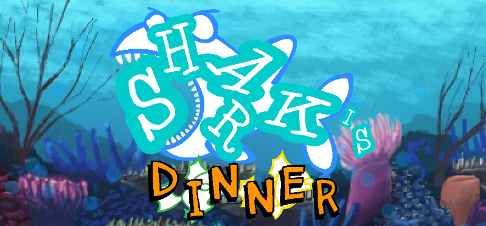

El minijuego conocido como "Shark's Dinner" será actualizado con nuevo contenido. Fue creado por Fernando Cardos Martegani como trabajo práctico para la materia Tecnología Multimedial 1, en el lenguaje y entorno Processing. La versión original consiste en mover arriba y abajo a un tiburón para que consiga comer a todos los peces de la zona, pero esquivando los peces venenosos para no perder puntos.
Hasta donde se sabe por el momento, se espera que la nueva versión 2.0 agregue contenido como:
Fernando A. Cardos Martegani